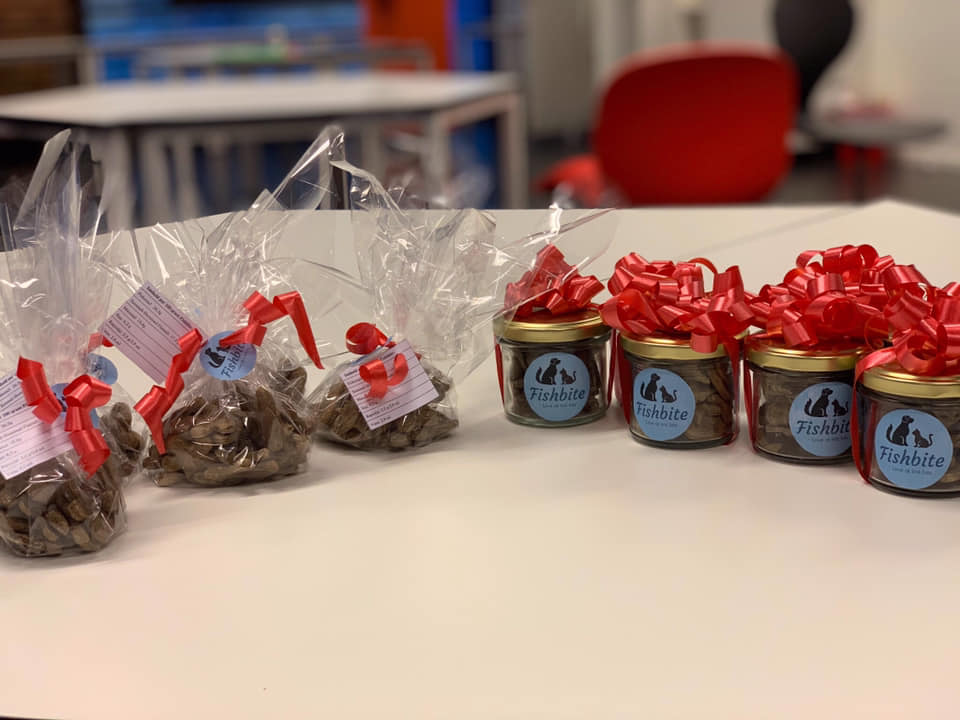

Våre dyrekjeks er en miljøvennlig og sunn godbit for dyret ditt. Hovedingrediensen er fiskemel som er fiskerester som har blitt kvernet sammen til et fint pulver. I steden for at det kastes så har vi puttet en bruk til det ved å gi det det dyrene våre (som elsker det). Produktet inneholder masse OMEGA-3, proteiner, mineraler, jod, osv… Vi ønsker å gi kjæledyret ditt noe som er godt, men samtidig sunt.
